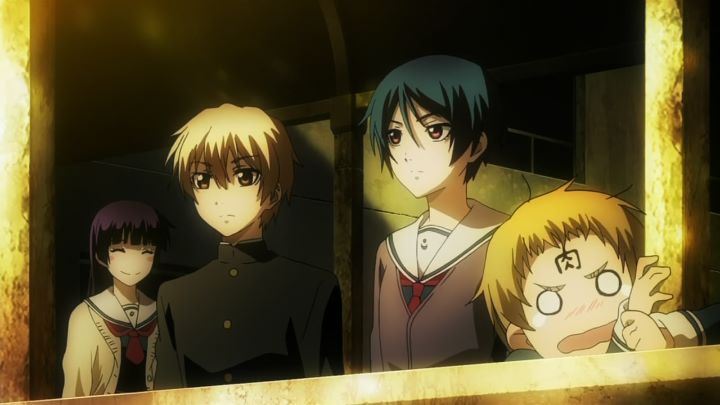

I've heard a lot of different opinions of "Dusk Maiden of Amnesia" when it came out in 2012. I heard it was just another fan-service slice-of-life show. I heard it was one of the best shows of it's year. In a way, it is all of these things, which is somewhat frustrating. But boy, do I have a soft spot for it! Yukko is a ghost. She doesn't know why she haunts the high school she grew up in. Most people can't see her, except for one boy named Teiichi who happened to be wandering in an old wing of the building. This becomes the start of a romantic relationship and a "Paranomal Activity Club," founded to help discover Yukko's mysterious past. Most of the show is indeed slice-of-life/high-school/fan-service romance. At least the fan-service is given reason: Yukko isn't used to people seeing or touching her (being a ghost), and so she hugs Teiichi constantly, and tends to undress anywhere since most people can't see her. But this also means that most of the episodes have visual gags such as Teiichi accidently groping Yukko's breast, or Yukko leaning in to give us a good view of her cleavage. She also tends to flirt a little too much, much to the annoyance of the two other girls in the club, who happen to also have an obvious crush on Teiichi (well, only one actually gets mad, since the other can't actually she Yukko). I don't mind this too much (and Yukko certainly become an instant anime crush when I saw her on screen), but it can be distracting from the rest of the actual story. Most of the series revolves around general episodic mysteries, all of which Yukko seems to be a part of. These do a good job introducing us to the characters, and explaining different views of ghosts and how they exist, but also feels limiting. It isn't until the second half that we really get into the good bits of the story: we start to learn more about Yukko's past, and of an evil shadow that creeps over her. The romantic relationship between Yukko and Teichi also blossoms, and I did cry a little during the last episode (as well as cheer when the bitter-sweet ending was taken back at the last moment). Both the romance and mystery is genuinely intriguing. It's a shame most of the series seems so much like another Japanese visual novel with all the romantic interests in play. If some (male) supporting characters were added, and the fanservice and comedic moments toned down a little, a touching short series or film could have been made of this.  Visuals are good, but not exceptional most of the time. However, the art really shines when shadow comes into play, and in the distant skies and backgrounds. Also, the art can get creepy when called for. The audio is decent and moody, with an exceptional opening theme, and catchy and/or atmospheric background music (the American release by Sentai filmworks came with a soundtrack of the OST, which I very much enjoyed). The English dub was fine. Overall, the production seems fitting for a modern anime, but only slightly above the average show to be released in the 2010's decade.I certainly appreciate "Dusk Maiden of Amnesia," but it seems like another anime that you wished you lived in, and not much more. I don't know if it would have benefitted from more episodes, or less. There is a sweet romance here though, and most otaku will feel at home with this one. It's hard to find any good anime with a horror bent, so if you are looking for that and don't mind the romance aspect, this is one of your better options.
- "Ani" More reviews can be found at : https://2danicritic.github.io/ Previous review: review_Drifters Next review: review_Eden_of_the_East